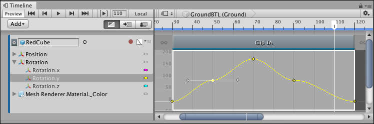

Selecting keys¶
Click to select a single key. Selecting a key deselects all other selected keys. The Curves view displays the selected key with its tangents.

Click to select a single key. A selected key shows its tangents.
To select contiguous keys along the same animation curve, click the first key, then hold Shift and click the last key.
Hold Shift and click a key to select contiguous keys
There are many ways to select and deselect keys in the Curves view:
Hold Command/Control and click to select discontiguous keys. Hold Command/Control and click a selected key to deselect it.
Click and drag on an empty spot in the Curves view to draw a selection rectangle. This selects all keys within the rectangle. Hold down Shift while drawing the selection rectangle to add keys to the current selection.
Double-click a selected key to select all keys on the same animation curve.